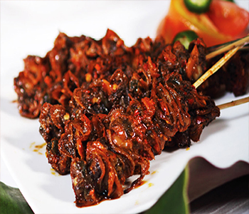

Bahan:
- 500 gr Kerang Dara
- 3 sdm Minyak Goreng
- 1/2 Gelas Air
- Secukupnya Tusuk sate
Bumbu Rempah:
- 3 cm Lengkuas (Dimemarkan)
- 2 Lembar Daun Salam
- 3 Lembar Daun Jeruk Purut
Bumbu Halus:
- 4 Siung Bawang Putih
- 4 Siung Bawang Merah
- 5 buah Cabe Merah kering
- 7 buah Cabe Rawit (Opsional)
Bumbu Pelengkap:
- 1/2 sdt Kaldu Bubuk
- 1 sdm Kecap Manis
- Secukupnya Garam
- Secukupnya Gula Pasir
Cara Membuat:
- Panaskan minyak goreng, tumis bumbu rempah dan bumbu halus hingga harum.
- Masukkan kerang dara yang sudah dicuci bersih, aduk rata, tuang air dan bumbu pelengkap, aduk rata kembali,masak hingga air kering dan kerang matang..matikan api,sisihkan.
- Siapkan tusuk sate, tusuk kerang hingga tumisan kerang habis. Sate kerang ini bisa langsung disantap atau di bakar dahulu supaya lebih mantap.
- Sate kerang bumbu pedas siap disajikan.. 👍😀